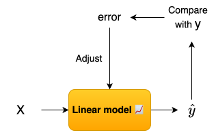

Linear Regression = Projection
Linear regression is not curve fitting — it is projection into a subspace.
Linear regression is often introduced as a method to “fit a line through data points”. But that’s misleading. At its core, linear regression is not about drawing a line — it is about finding the best projection of a high-dimensional signal onto a lower-dimensional subspace. From a statistical perspective, linear regression assumes that the expected value of the output given the inputs, E(Y | X), can be approximated as a linear function of the input variables. This assumption might sound restrictive, but it is surprisingly powerful. Before the age of modern computation, linear models were among the few tools available for understanding relationships in data. Yet even today, they remain one of the most widely used modeling techniques. The reason is not complexity — but clarity. Linear models are simple, stable, and interpretable. They allow us to understand how each input influences the output in a direct and measurable way. In many real-world situations — especially when data is limited, noisy, or sparse — simpler models can actually perform better than highly complex nonlinear methods. This happens because they avoid overfitting and focus on capturing the dominant structure in the data. More importantly, linear regression is not the end of modeling — it is the starting point. Many advanced nonlinear techniques are built by extending this simple idea: instead of changing the model completely, we transform the inputs and still apply linear reasoning in a higher-dimensional feature space. This is why understanding linear regression is not optional — it is foundational.
Intuition
Linear regression tries to explain a relationship between inputs and outputs using a simple idea: Each input x is passed through a linear model to produce a prediction ŷ. This prediction is our best guess of the true output y.
The goal is to make ŷ as close as possible to y for all data points !!!

So in short, the model tries to learn a function that best aligns predictions with reality, but it is constrained to remain linear. Because of this constraint, the model cannot perfectly pass through all points. The difference between the true value y and the prediction ŷ is called the error (or residual). This error is not a failure — it is the signal that tells us how far the model is from the true data structure. So linear regression is not about eliminating error completely. It is about finding the best possible compromise where the total error across all points is minimized. In a 2-Dimensional settings imagine trying different lines to fit the same set of data points. Each line produces a different amount of error. We can think of this as exploring a landscape where each point represents a possible model, and the height represents the total error.
Move the slider m and c to see how the line changes and how the error changes. Try to find the line that minimizes the error !!!
m = 1
c = 0
Loss = 0
The next obvious question is: how do we find this best line mathematically and how we generalize this to higher dimensions? We will answer this question in the next sections, but the key intuition is that we can derive a closed-form solution for the optimal line by using calculus to minimize the total error.
Formulation
Notation
Before we begin, we define the notation used throughout this page for clarity.
- Scalar output: \( y \)
- Vector of outputs (all samples): \( \mathbf{y} \)
- Input for a single sample (feature vector): \( \mathbf{x} \)
- Input matrix (all samples): \( \mathbf{X} \)
- Noise (vector of errors): \( \boldsymbol{\varepsilon} \)
- Parameter vector: \( \boldsymbol{\beta} \)
- Model function for a single sample: \( f(\mathbf{x}) \)
- Model function for all samples: \( \mathbf{f(X)} \)
Scalars are written in normal form, vectors in bold lowercase, and matrices in bold uppercase.
The Model formulation can be given as:
One key assumption about the noise \( \boldsymbol{\varepsilon} \) is that its conditional expectation given the inputs is zero. This means that on average, the noise does not systematically bias our predictions in any direction:
The most beautiful consequence of this assumption is it enables us to arrive at this relation:
Since \( f\mathbf{(X)} \) is deterministic given \( \mathbf{X} \), and using the assumption \( \mathbb{E}[\boldsymbol{\varepsilon} \mid \mathbf{X}] = 0 \):
This result shows a key idea in regression: the true regression function is simply the average value of the output given the input. If we fix a particular value \(\mathbf{x}\) and observe the corresponding \(y\) many times, each observation will be slightly different because of random noise (Think of it like you pass the \(\mathbf{x}\) into a machine that converts this \(\mathbf{x}\) into \(f(\mathbf{x})\), but this machine is not super precise so each time add a random error to the \(f(\mathbf{x})\)). But if we take the average of all those observed values, the randomness cancels out and what remains is a stable pattern. That stable pattern is exactly \(f(\mathbf{x})\), which represents the typical or expected value of \(y\) for a given \(\mathbf{x}\). So, \(f(\mathbf{x})\) is not trying to capture every individual fluctuation, but only the underlying trend in the data.
Now because the model is linear we can approximate the \(f\mathbf{(x)}\) for a sample as as:
For all the n data points we can write the vector of predictions as:
We can write this more compactly as:
The long story short is Linear Regression is all about finding \( \boldsymbol{\beta} \) that minimize the total error between the predictions and the true outputs
Before we go about solving for \( \boldsymbol{\beta} \), it is important that the design matrix \( \mathbf{X} \) satisfies certain conditions. One key requirement is that the features should be linearly independent. This means that no feature can be expressed as a linear combination of the others.
In practice, this often happens when we have more features than samples, or when some features are highly correlated with each other. To address this issue, we can use techniques like feature selection, dimensionality reduction, or regularization to ensure that the model remains stable and interpretable. These things will be covered in later section. For now let's assume that our design matrix \( \mathbf{X} \) satisfies this condition.
Now we move to the key step: solving for \( \boldsymbol{\beta} \). To do this, we first need a way to measure how good a particular choice of \( \boldsymbol{\beta} \) is.
Recall that our goal is to make the predictions \( f(\mathbf{X}) \) as close as possible to the true outputs \( \mathbf{y} \). To quantify this difference, we define a loss function based on the squared error. This choice is natural because it penalizes large deviations more heavily and leads to a smooth optimization problem.
Expanding this in matrix form, the loss function can be written as:
This formulation gives us a clear objective: choose \( \boldsymbol{\beta} \) such that this squared error is minimized.
To find the optimal solution, we differentiate the loss function \( L \) with respect to \( \boldsymbol{\beta} \) using matrix calculus and set it to zero. This gives the first-order optimality condition:
Solving this equation leads to the condition that defines the optimal parameter \( \hat{\boldsymbol{\beta}} \).
To ensure that this solution is indeed a minimum (and not a maximum or saddle point), we check the second-order condition. The Hessian of the loss function is:
Due to the assumption that the columns of \( \mathbf{X} \) are linearly independent, the matrix \( \mathbf{X}^T \mathbf{X} \) becomes positive definite.
This has two important consequences. First, a positive definite matrix is always invertible, which ensures that the solution for \( \boldsymbol{\beta} \) is unique.
Second, it guarantees that the loss function is strictly convex, meaning the point obtained from the optimality condition corresponds to a true global minimum.
Now, from the first-order optimality condition:
Using this \(\hat{\boldsymbol{\beta}}\) the prediction is given as follows:
The difference between the observed values \( \mathbf{y} \) and the predicted values \( \hat{\mathbf{y}} \) is called the residuals, denoted as \( \mathbf{e} = \mathbf{y} - \hat{\mathbf{y}} \). These residuals represent the portion of the data that the model fails to capture. The goal of linear regression is to minimize the sum of squared residuals, which is equivalent to maximizing the fit of the model to the data. So the Loss function that we tried to minimize reduces to this exact functional form:
Residuals visualized in the 2D.
Geometry
Now the time has come to understand why Linear Regression is actually a projection. Recall the model prediction is given by \( \hat{\mathbf{y}} = \mathbf{X}\hat{\boldsymbol{\beta}} \). This means that the predicted values \( \hat{\mathbf{y}} \) are in the column space of \( \mathbf{X} \). We can see it precisely as follows, :
This makes an important point clear: the predicted vector \( \hat{\mathbf{y}} \) is nothing but a linear combination of the columns of \( \mathbf{X} \). Therefore, it must lie entirely within the column space of \( \mathbf{X} \). In other words, no matter what the true output \( \mathbf{y} \) is, our model is restricted to choosing \( \hat{\mathbf{y}} \) from this subspace.
This also means that there are infinitely many possible vectors inside this subspace that could serve as predictions, depending on the choice of \( \boldsymbol{\beta} \). The key question, therefore, is: which one does the model choose? The answer comes from the optimality condition of the least squares problem.
This condition tells us that the residual vector \( \mathbf{r} = \mathbf{y} - \hat{\mathbf{y}} \) is orthogonal to every column of \( \mathbf{X} \), and therefore orthogonal to the entire column space of \( \mathbf{X} \). In other words, the error made by the model has no component in any direction that the model can represent. This condition uniquely determines \( \hat{\boldsymbol{\beta}} \), and hence fixes the prediction \( \hat{\mathbf{y}} \). As a result, among all possible vectors in the column space of \( \mathbf{X} \), it selects the one that minimizes the distance between \( \mathbf{y} \) and \( \hat{\mathbf{y}} \).
Visualization of the projection in 3D. The plane represents the column space of X.
So far, we have interpreted \(\hat{\mathbf{y}}\) as the projection of \(\mathbf{y}\). We now ask whether there exists a linear operator that maps \(\mathbf{y}\) directly to \(\hat{\mathbf{y}}\) without explicitly computing \(\hat{\boldsymbol{\beta}}\). Indeed, such an operator exists and is called the Hat Matrix, denoted by \(\mathbf{H}\):
We will explore Hat Matrix and its beautiful properties in the next section.
Hat Matrix Deep dive
Probabilistic View
OLS becomes Maximum Likelihood Estimation under this assumption.
Regularized Regression
To prevent overfitting, we can add a penalty term to the loss function that discourages large coefficients.
Common choices for R(β) include L2 norm (Ridge) and L1 norm (Lasso).